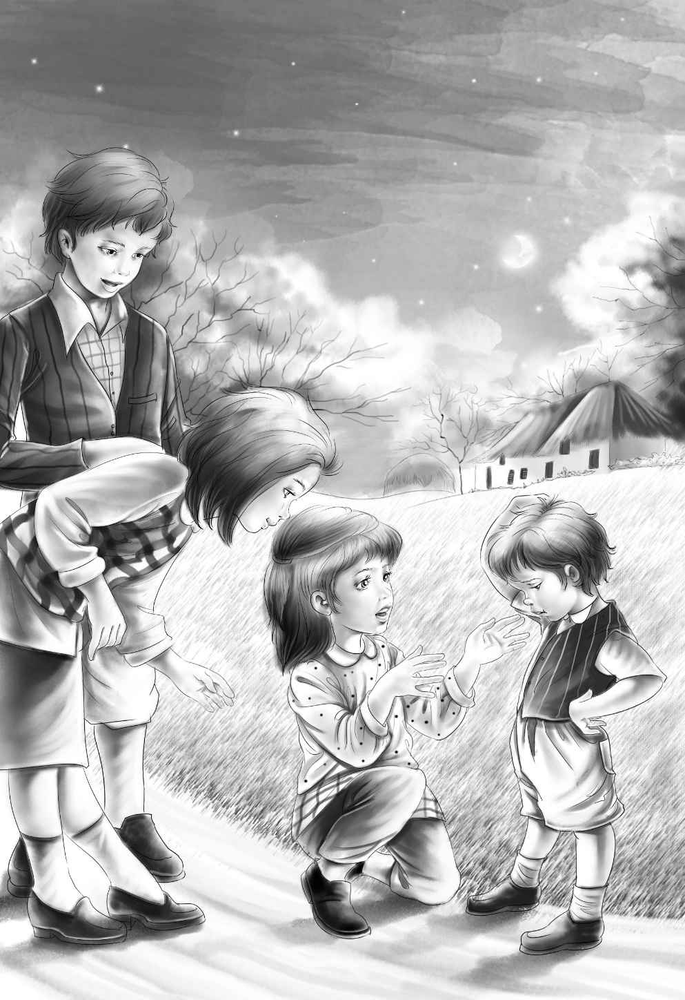
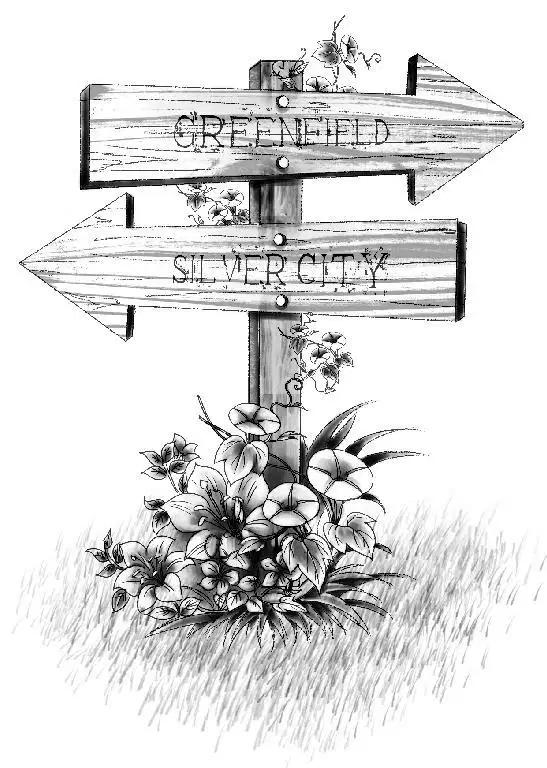

Soon the children left the town and came to a road．The big yellow moon was out， and they could see the road very well．
“We must walk fast，” said Henry．“I hope the baker and his wife don’t wake up and find us gone．”
They walked down the road as fast as they could．
“How far can you carry Benny？” asked Violet．
“Oh， I can carry him a long way，” replied Henry．
But Jessie said， “I think we could go faster if we woke him up now．We could take his hands and help him along．”
Henry stopped and put Benny down．
“Come， Benny，” he said．“You must wake up and walk now．”
“Go away！” said Benny．
“Let me try，” said Violet．“Now， Benny， you can play that you are a little brown bear and are running away to find a nice warm bed．Henry and Jessie will help you， and we’ll find a bed．”
Benny liked being a little brown bear， and so he woke up and opened his eyes．Henry and Jessie took his hands， and they all went on again．
They passed some farmhouses， but the houses were dark and quiet．The children did not see anyone．They walked and walked for a long time．Then the red sun began to come up．
“We must find a place to sleep，” said Jessie．“I am so tired．”

Little Benny was asleep， and Henry was carrying him again．The other children began to look for a place．
At last Violet said， “Look over there．” She was pointing at a big haystack in a field near a farmhouse．
“A fine place， Violet，” said Henry．“See what a big haystack it is！”
They ran across the field toward the farmhouse．They jumped over a brook， and then they came to the haystack．Henry was still carrying Benny．
Jessie began to make a nest in the haystack for Benny， and when they put him into it， he went to sleep again at once．The other children also made nests．
“Good night！” said Henry， laughing．
“It is ‘Good morning，’I should think，” replied Jessie．“We sleep in the day， and we walk all night．When it is night again， we’ll wake up and walk some more．”
The children were so tired that they went right to sleep．They slept all day， and it was night again when they woke up．
Benny said at once， “Oh， Jessie， I’m hungry．I want something to eat．”
“Good old Benny，” said Henry．“We’ll have supper．”
Jessie took out a loaf of bread and cut it into four pieces．It was soon gone．
“I want some water，” begged Benny．
“Not now，” said Henry．“You may have some water when it gets dark．There is a pump near the farmhouse．But if we leave the haystack now， someone will see us．”
When it was dark， the children came out of the haystack and went quietly toward the farmhouse， which was dark and still．Nearby was a pump， and Henry pumped water as quietly as he could．He did not even wake up the hens and chickens．
“I want a cup，” said Benny．
“No， Benny，” whispered Henry．“You will have to put your mouth right in the water．You can play you are a horse．”
This pleased Benny．Henry pumped and pumped， and at last Benny had all the water he wanted．The water was cold and sweet， and all the children drank．Then they ran across the field toward the road．
“If we hear anyone，” said Jessie， “we must hide behind the bushes．”
Just as she said this， the children heard a horse and cart coming up the road．
“Keep very still， Benny！” whispered Henry．“Don’t say a word．”
The children got behind the bushes as fast as they could， for they did not have much time to hide．The horse came nearer and nearer and began to walk up the hill toward them．Then the children could hear a man talking．It was the baker！
“I wonder where those children went，” he said．“I don’t think they could walk as far as Silver City．If we don’t find them in Greenfield， we’ll go home．”
“Yes，” answered his wife．“I do not want to find them， anyway．I don’t like children， but we must try a little while longer．We will look for them in Greenfield， and that’s all．”
The children watched until the horse and cart had gone down the road．Then they came out from behind the bushes and looked at each other．
“My， I am glad those people did not see us！” said Henry．“You were a good boy， Benny， to keep still．
“We’ll not go to Greenfield．”
“I wonder how far it is to Silver City，” said Jessie．
The children were very happy as they walked along the road．They knew that the baker would not find them．They walked until two o’clock in the morning， and then they came to some signs by the side of the road．
The moon came out from behind the clouds，and Henry could read the signs．

“One sign says that Greenfield is this way，” he said．“The other sign points to Silver City．We don’t want to go to Greenfield．Let’s take this other road to Silver City．”
They walked for a long time， but they did not see anyone．
“Not many people come this way， I guess，” said Henry．“But that is all the better．”
“Listen！”said Benny suddenly．“I hear something．”
“Listen！” said Violet．
The children stood still and listened， and they could hear water running．
“I want a drink of water， Henry！” said Benny．
“Well， let’s go on，” said Henry， “and see where the water is．I’d like a drink， too．”
Soon the children saw a drinking fountain by the side of the road．
“Oh， what a fine fountain this is！” said Henry， running toward it．“See the place for people to drink up high， and a place in the middle for horses， and one for dogs down below．”
All the children drank some cold water．
“Now I want to go to bed，” said Benny．
Jessie laughed．“You can go to bed very soon．”
Henry was looking down a little side road， which had grass growing in the middle of it．
“Come！” he cried．“This road goes into the woods．We can sleep in the woods．”
“This is a good place，” said Jessie， as they walked along．“It is far away from people．You can tell that by the grass in the road．”
“And it will be near the drinking fountain，” said Violet．
“That’s right！” cried Henry．“You think of everything， Violet．”
“It is almost morning，” remarked Jessie．“And how hot it is！”
“I’m glad it is hot，” said Henry， “for we must sleep on the ground．Let’s find some pine needles for beds．”
The children went into the woods and soon made four beds of pine needles．
“I hope it’s not going to rain，” said Jessie， as she lay down．
Then she looked up at the sky．
“It looks like rain， for the moon has gone behind the clouds．”
She shut her eyes and did not open them again for a long time．
More clouds rolled across the sky， and the wind began to blow．There was lightning， also， and thunder， but the children did not hear it．They were all fast asleep．